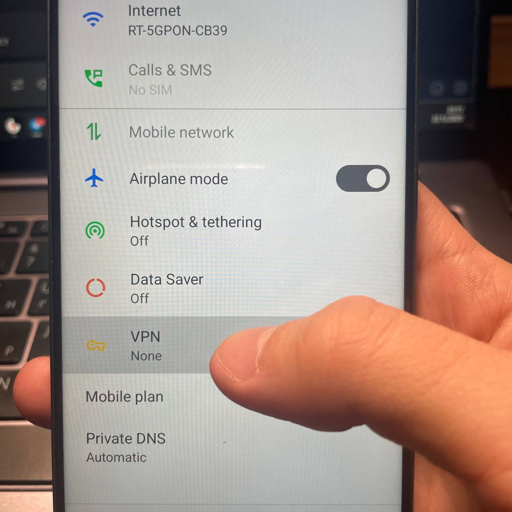
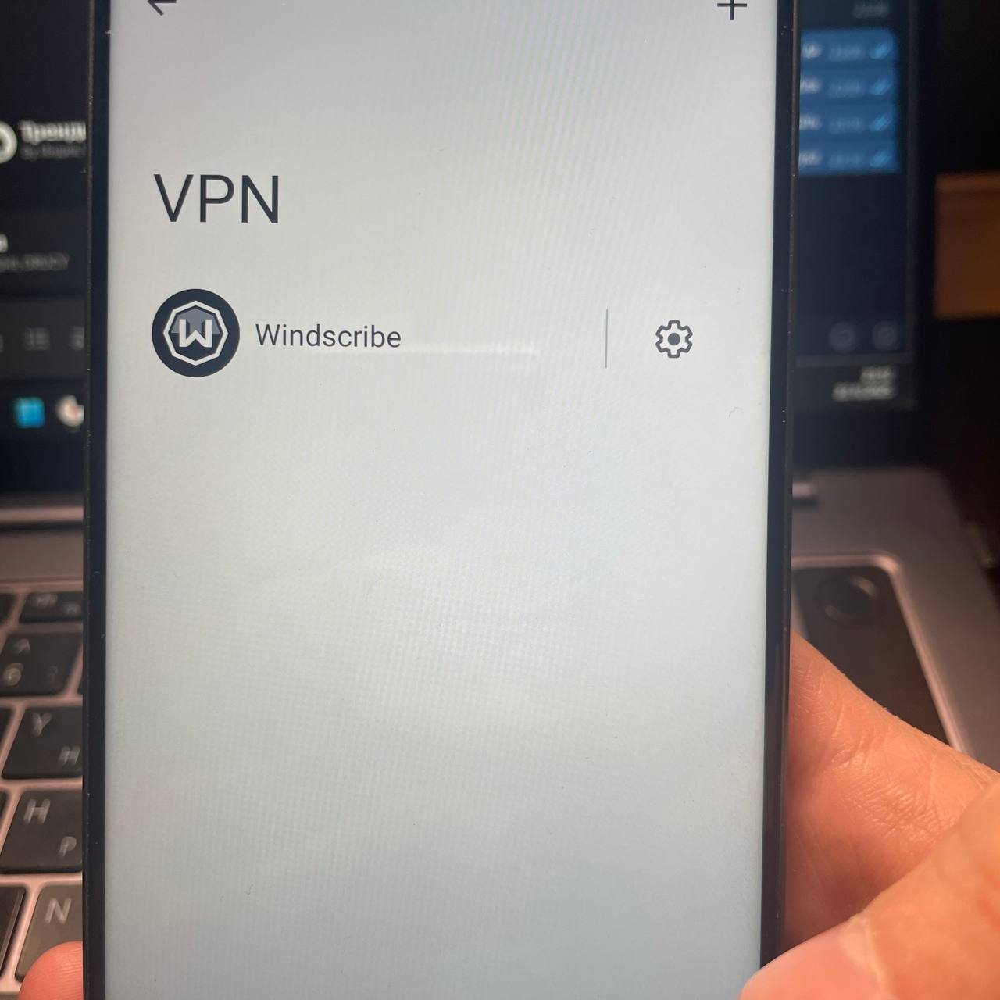
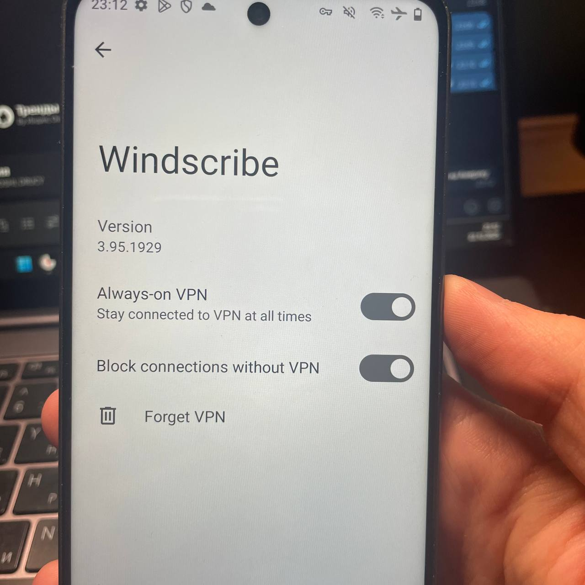
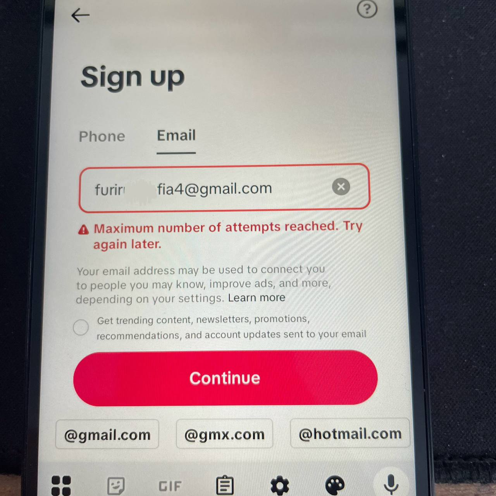
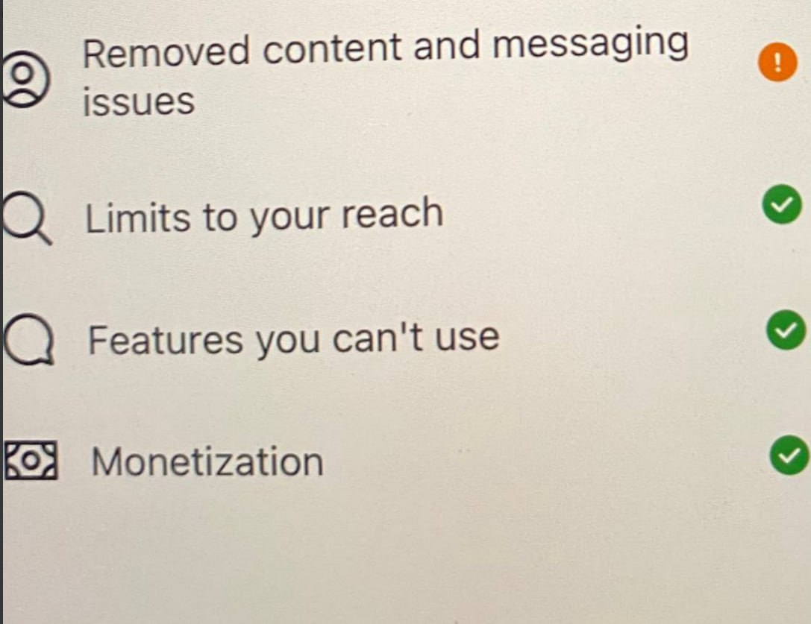
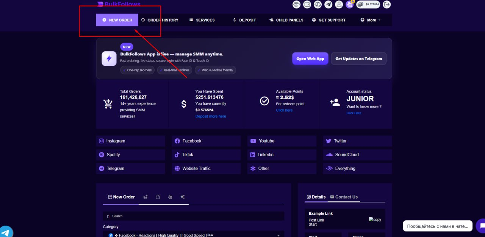
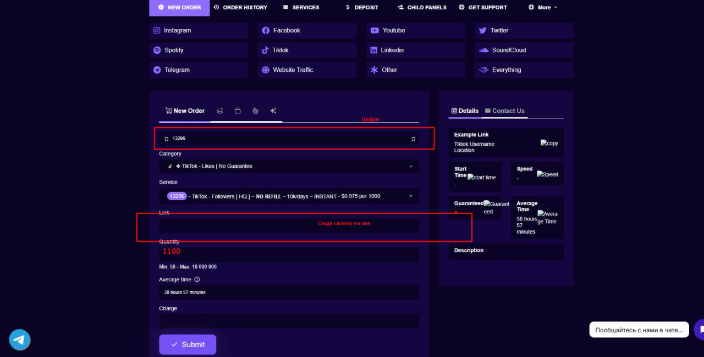
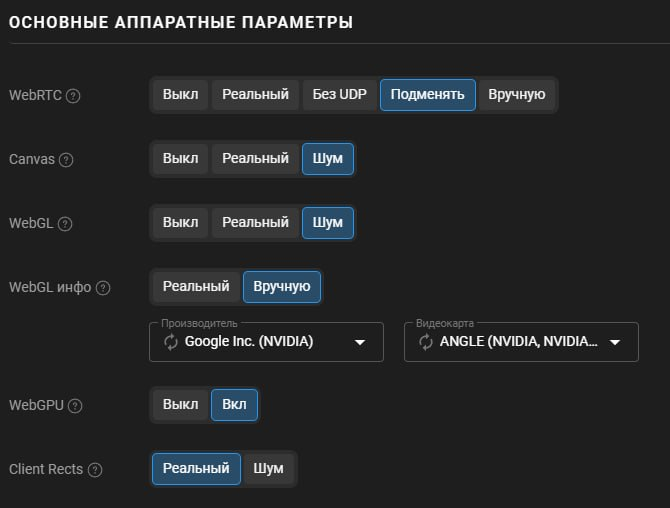
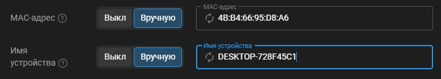
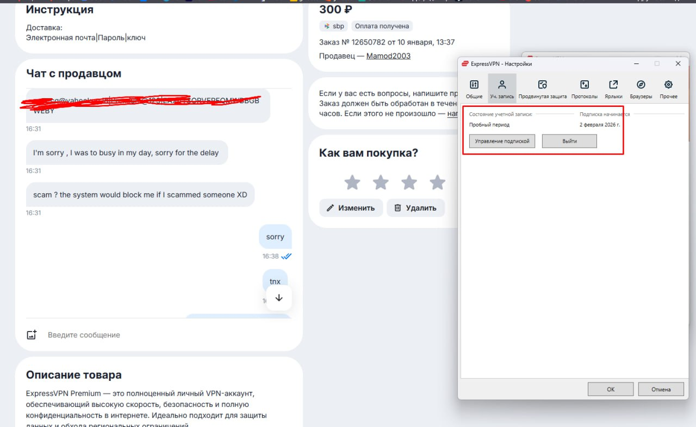

📚 МАНУАЛЫ
Полная база знаний. Пошаговые гайды с интеграцией всех внешних источников (Telegraph, Teletype), видео и скриншотов.
Настройка устройства
VPN, IP и фрод
Почты для реги
Рега акков Instagram
Верификации
Залив видео Instagram
Создание контента
TikTok: полный гайд
Facebook + Dolphin
Прокладки и ссылки
Описания и BIO
Оплата из РФ
Инструменты и софт
Обновления и нюансы
⚠️ Важные обновления и изменения
⚡ Отлёжка аккаунтов Instagram
Старая инфа (дек 2025): «СУТКИ ОТЛЕГА потом заливаем видосы»
Актуально (мар 2026): «Отлега на акки инсты НЕ нужна, зарегали и сразу можете пролить 2-4-6 видео, просмотры 5-10-20к на первом проливе»
⚡ Количество видео за пролив
Старая инфа: «Проливаем 2 видео в день»
Актуально (фев 2026): «Льем по 4 видео. ВСЕ ВИДЕО УНИКАЛЬНЫЕ. 10 акков = 40 видео»
⚡ Сброс телефона
Старая инфа: «5 аккаунтов на сессию потом полный сброс»
Актуально (фев 2026): Сброс не обязателен. «кеш не чистил, трубку не сбрасывал» — 12 из 15 акков стрельнуло
⚙️ Настройка устройства
⚙️ Подготовка телефона к работе Критически важно
📋 Чек-лист настройки (для всех платформ)
Полный сброс устройства
Сброс до заводских настроек — обязательный первый шаг перед каждой сессией регистрации.
Настройка региона
Регион: USA (или тир1 Европа для инсты). Часовой пояс должен соответствовать выбранному ГЕО. Язык — английский.
Отключаем всё лишнее
Обязательно отключить: Геолокация (все виды), Bluetooth, NFC (только Android), Find My Device / Поиск устройства, Скрытая геолокация Google.
Удаляем РУ приложения
Удалить: Яндекс, RuStore, любые приложения с российскими метаданными. Они палят ваше реальное ГЕО.
Режим полёта
Включаем авиарежим (для тех, кто из СНГ), затем подключаемся к Wi-Fi.
Скачиваем необходимое
Через VPN скачиваем: Instagram / TikTok / Facebook + Telegram + VPN-приложение.
📱 Видео-инструкция: Настройка Android
Пошаговая настройка Android-устройства на ГЕО USA
Настройка Android — часть 2: Wi-Fi, VPN, скачивание приложений
Настройка Android — часть 3: подробная пошаговая инструкция (3+ минуты)
🍎 Видео-инструкция: Настройка iPhone
Пошаговая настройка iPhone на ГЕО USA
🎯 Как правильно настроить гео (видео)
Настройка телефона на нужное гео (USA) — обязательно БЕЗ SIM-КАРТЫ
📹 YouTube: настройка телефона на ГЕО
YouTube — Как правильно настраивать телефон на нужное гео (USA)
🔤 Красивый шрифт для историй (Android)
На Android стоковый шрифт некрасивый. Заходите на textgenerator.ru/font/, находите приятный шрифт, копируете и вставляете в историю.
Пример использования стороннего шрифта в историях
Результат с красивым шрифтом
📌 Нюанс для Xiaomi
🌐 VPN, IP и проверка на фрод
🌐 Выбор VPN и проверка IP Основа безопасности
📡 Какой VPN использовать?
Для стран СНГ (РФ, Казахстан, Украина)
Обязательно VPN/VPS/PROXY. Мобильный интернет НЕ подходит.
Для стран Европы (Австрия, Италия и др.)
Можно использовать мобильный интернет. Просто включите самолёт → подождите → выключите для смены IP.
✅ Рекомендованные VPN (для РФ)
- Neo VPN — Telegram-бот (хорош для реги, НО нельзя проливать через него — просмотры будут нули)
- ExpressVPN — купить через GGsel за 300₽ (хорош для пролива)
- Windscribe — альтернатива Express
- Browsec — бесплатный вариант
- AdGuard VPN — бесплатный (Нью-Йорк)
- Potatso — iOS, для прокси
- Amnezia VPN — документация
🔍 Когда инста проверяет IP на фрод
🛡️ Сервисы проверки IP на фрод
- scamalytics.com — основной (ориентируйтесь на него)
- ipin.io — дополнительный
- APIVoid — ещё один контроль
- AbuseIPDB
- TrustMyIP
| Фрод-скор | Статус | Риски |
|---|---|---|
| 0–35 | Идеально ✅ | Минимальные |
| 35–50 | Допустимо ⚠️ | Могут быть верифы |
| 50+ | Рисково 🚫 | Верифы, теневой бан, ограничения реги |
🔒 Защита от утечки реального IP
Включайте функцию блокировки интернета без VPN, чтобы инста случайно не увидела ваше реальное ГЕО:

Включите эту функцию ПОСЛЕ подключения к VPN — интернет не будет работать без VPN
💡 Лайфхак для браузера (оплата сервисов)
Создайте чистый Chrome. С VPN (AdGuard, New York) погуглите новости Нью-Йорка, концерты, мероприятия. 1-2 дня отлежите браузер. После этого можно оплачивать VPN и сервисы с препейд-карт. Всегда заходить только через VPN, всегда NY.
📧 Почты для регистрации
📧 Создание почт для регистрации аккаунтов
🏆 Рекомендуемые сервисы (в порядке приоритета)
- iCloud — самый простой способ. Покупаете подписку iCloud+ 50 ГБ за $1, получаете возможность создавать кастомные почты.
- Gmail (+alias) — бесконечные бесплатные почты через трюк с токенами
- DuckDuckGo — duckduckgo.com
🍎 Как создать почту iCloud (видео)
Создание почты iCloud — покупка подписки iCloud+ 50 ГБ за $1
Полный видеогайд: YouTube — iCloud почты за копейки
♾️ Gmail: Бесконечные бесплатные почты через +alias
Как это работает
Gmail игнорирует всё после + до @gmail.com. Для сайтов это разные email, для Gmail — один ящик.
Для реги: derevo134+L2apf@gmail.com
Для реги: derevo134+xyz99@gmail.com
→ Все письма приходят на derevo134@gmail.com (задержка 2-3 сек)
Генерация через ИИ: «Логин основной почты ____@gmail.com, сгенерируй мне 1000 адресов с +токен alias» → нейросеть за секунды соберёт txt-файл.
Сортировка писем: В поиске Gmail → Показать параметры → Кому: derevo134+*gmail.com → Создать фильтр → Пропустить входящие + Применить ярлык.
📱 Как регать Gmail на Android (видео)
YouTube — Как регать Google аккаунты
Используйте домашний Wi-Fi и мобильный инет. Если просит номер — меняете IP (самолёт или перезагрузка роутера). В среднем 5 акков на 1 сброс.
📸 Настройка VPN-блокировки интернета без VPN
Включаем функцию блокировки интернета без VPN — чтобы инста случайно не спалила ваше реальное ГЕО:
Включаем эту функцию после подключения к VPN. Интернет не будет работать без VPN


✏️ Красивый шрифт для историй (Android)
На Android идёт некрасивый стоковый шрифт. Решение: заходим на textgenerator.ru/font, находим приятный шрифт, копируем и вставляем в историю.
🦆 DuckDuckGo почты
Ещё один вариант — уникальные почты от DuckDuckGo. Гайд: vc.ru — Уникальные почты от DuckDuckGo
📹 Видео: как регать iCloud почты
YouTube — Как создавать iCloud почты
📄 Гайды по Gmail (альтернативные способы)
📱 Регистрация аккаунтов Instagram
📱 Полный гайд по регистрации аккаунтов Instagram
📋 Предварительная подготовка
- Сбросить устройство (см. раздел «Настройка устройства»)
- Настроить телефон на нужное ГЕО (Европа Tier-1 или USA)
- Подключить VPN и проверить IP на фрод (см. «VPN и IP»)
- Подготовить почты — iCloud / Gmail / DuckDuckGo (см. «Почты»)
🔑 Два способа регистрации
Способ 1: Через номер телефона
Покупаем номер
Сервис: sms-activate.io (выбираем USA номера)
Создаём аккаунт
Заходим в Instagram → Create Account → вводим номер → получаем SMS
Настраиваем профиль
Ставим аватарку (лицо без откровенного контента), имя модели, короткий ник (без цифр)
Привязываем почту
Настройки → Личные данные → добавляем почту (iCloud или Gmail)
Удаляем номер
ОБЯЗАТЕЛЬНО удаляем номер телефона из настроек. Выходим, данные НЕ сохраняем
Способ 2: Через почту (рекомендуется)
Заходим в Instagram
Create Account → выбираем «через почту» → вводим почту
Подтверждаем код
Код приходит на почту (для Gmail +alias — на основной ящик, задержка 2-3 сек)
Заполняем данные
Возраст: 18-26 лет. Имя модели. Ник: короткий, без цифр и длинных символов
Момент истины
Нажимаем «Agree» → один из трёх сценариев (см. ниже)
🎯 Три сценария при регистрации
✅ Сценарий 1: Успешная регистрация
Ставим аватарку, скипаем всё остальное (можно подписаться на пару интересов). Выходим из аккаунта. Регаем следующий.
❌ Сценарий 2: «Try Again Later»
На этом IP уже много аккаунтов. Решение: закрываем Instagram, принудительно останавливаем, меняем IP, проверяем фрод, регаем заново. ВАЖНО: почту и ник нужно менять на новые!
Важно: повторяем процесс (закрываем инсту → принудительно останавливаем → меняем IP → проверяем фрод → новая почта → новый ник) пока не поможет. В итоге даст регнуть или выдаст вериф.
Вводим свой номер телефона → код приходит в WhatsApp → крутим лицом в камеру (данные НЕ сохраняются). Проверка: 1-12 часов. В 80% причина — грязный IP.
📊 Лимиты и правила
| Параметр | Значение |
|---|---|
| Акков на 1 сброс | 5 штук |
| Акков в час на 1 трубку | 5 штук максимум |
| Пауза между сессиями | 1 час (с момента последней реги) |
| Отлёжка | НЕ нужна (актуально март 2026) |

У кого данная проблема — меняйте IP и всё будет ОК
🛡 Верификации и как с ними бороться
🛡 Полный гайд по верификациям Instagram
⚡ Цепная реакция
Если один акк попал на верификацию по ID — все остальные акки на этом устройстве тоже получат вериф. Решение: немедленно сбрасываем трубку и начинаем заново.
📋 Типы верификаций
| Тип | Что делать | Шансы |
|---|---|---|
| Камера (покрутить лицом) | Проходим — кривляемся на камеру, делаем гримасы | Высокие |
| ID (документы) | Акк в помойку, не тратьте время | Нулевые |
| Код на WhatsApp | Вводим свой номер → код в WA → проходим камеру | 80% если IP чистый |
⏱ Сроки проверки
После прохождения верификации камерой: от 1 до 12 часов. В 80% случаев причина верифа — грязный IP (высокий фрод-скор).
📋 Подробный алгоритм действий при верификации
Вериф на новом акке (до 3 дней)
Акк в помойку. ВСЮ пачку аккаунтов с этого устройства тоже в помойку. Сбрасываем трубку и начинаем заново.
Вериф по камере
Включаем камеру, кривляемся и делаем гримасы. Система проверяет наличие живого человека. Данные НЕ сохраняются. Ждём 1-12 часов.
Вериф по номеру
Вводим СВОЙ номер → код приходит в WhatsApp → крутим лицом в камеру.
Вериф по ID (документы)
НЕ проходим. Акк удаляем.
🎬 Залив видео в Instagram
🎬 Пошаговый гайд по заливу видео в Instagram
⚙️ Подготовка к проливу
- Телефон настроен на USA
- VPN: для входа — чистый IP (Neo VPN), для пролива — ExpressVPN / Windscribe
- Browsec — простой VPN, работает в РФ
- Potatso (iOS) — для прокси-подключений
- VPN-боты в Telegram: Neo VPN Bot, VPN Liberty Bot
- ⚠️ Neo VPN + лока: чтобы лока в инсте определилась как USA, нужно в течение 3-4 дней войти и пролить через ExpressVPN, иначе лока будет РФ
- Для параллельного пролива ТТ: обязательно VPN USA (европа не подойдет)
- Максимум 5 аккаунтов в сессии на 1 трубку
- Всего активных аккаунтов: 20 штук (распределяйте по трубкам)
📅 День за днём: расписание пролива
| День | Действие | Критерий отсева |
|---|---|---|
| 1 | Проливаем 4 видео на каждый акк (флеши) | Забываем про акки на сутки |
| 2 | Смотрим выстрелы, ставим ссылку если 2к+, проливаем 4 видео | — |
| 3 | Проливаем 4 видео | — |
| 4 | Проливаем 4 видео | 0-80 просмотров → в отлёгу |
| 5 | Проливаем 4 видео | — |
| 6 | Проливаем 4 видео | до 300 без выстрела 1.5к → в отлёгу |
| 7-8 | Проливаем 4 видео | Нет 2к+ на 1-2 видео → убираем |
🎯 Как правильно проливать
Залить 1 видео на 1 акк
Переходим к следующему аккаунту
Пройти все аккаунты по 1 видео
Отложить телефон на 10-20 минут
Повторить
Заливаем по 1 видео по кругу, пока не будет по 4 на каждый
Перерыв между связками
5 акков × 1 видео → отдых → и по новой
⚙️ Настройки при публикации
- ✅ Включить максимальное качество в настройках Reels
- ❌ Убрать галочку «Можно скачать видео»
- ❌ Без хештегов (на начальном этапе)
- ❌ Без описания
- 🎵 Музыка: популярные исполнители из топ-чартов США
📊 Статус аккаунта
Проверяйте: Профиль → ☰ → Account Status → должна быть ЗЕЛЁНАЯ галочка напротив «Limits to your reach».

Зелёная галочка = аккаунт чист. Восклицательный знак = удалите видео, которое просит сама инста
#️⃣ Хештеги (продвинутый уровень)
Стратегия: разгоняем аккаунт «индусами» → потом поправляем ЦА хештегами (USA + рандом).
🔗 Как ставить ссылку
Создаём прокладку
getallmylinks.com (домен ОБЯЗАТЕЛЬНО .app)
Ставим через ИСТОРИИ
В БИО ссылку ставить НЕЛЬЗЯ! Только через сторис.
Почему не в БИО? Площадки научились вычислять прокладки. Ссылка в шапке → ограничение или вериф. Ссылку ставим ТОЛЬКО через истории и закрепляем в хайлайтах.
Закрепляем в хайлайтах
Названия: my link, links, bio, exclusive, content, private, full
🎯 Настройка ЦА (целевой аудитории)
Смотрите на аккаунте видео про Америку (Трамп, Илон Маск, города). Лайки: не более 12 в час. Подписки: 0-2. Если выскакивает «Рекомендовать чаще» — нажимаем ДА. Если индусы/турки — «Не рекомендовать».
📋 Истории
🎥 Создание контента и видео
🎥 Полный гайд по созданию видео-контента
📂 Три типа исходных видео
- Флеши — модель «случайно» показывает грудь/трусы/лифчик/попу
- НоуНюд (НН) — шутки, мемы, приколы, танцы, липсинг. Всё, что НЕ связано с 18+
- Реакции — модель удивляется / показывает пальцем вниз (якобы на продолжение)
🎯 Куда какое видео
| Тип контента | TikTok | ||
|---|---|---|---|
| Классический НоуНюд | Редко залетает | ✅ Основной | — |
| НоуНюд + Флеш | ✅ Отлично | ✅ Отлично | ✅ |
| Флеши (вырезка) | ✅ | Только вырезка | ✅ |
🧩 Формула уникального видео
✂️ Правила нарезки
- Флеши: ВСЕГДА в конце видео. Момент флеша: 0.2-0.5 сек. НЕ явный (ореол, трусы в зеркале). Цель: «там что-то было, нужно пересмотреть»
- НоуНюд: сохранять суть приколов. Танцы/липси можно обрезать, НО оставлять музыку
- Реакции: обрезать ОБЯЗАТЕЛЬНО на моменте, где модель показывает пальцем вниз
🎨 Обязательная обработка (уникализация)
- Наклонить: -1.5° / +1.5°
- Отразить (зеркально)
- Ускорить: максимум 1.1×
- Фильтры: едва заметные, 15-40% от фильтра
- Оверлей: на своё усмотрение
- Музыка: поверх голоса накладываем популярную музыку из USA
- Голос модели: желательно оставлять, но можно и без него. Если есть возможность — поверх голоса в редакторе накладывайте свою музыку
🎬 Видео: быстрая уникализация в CapCut
Как уникалить видео в CapCut за 1-2 минуты. 10 видео → экспорт → софт по склейке. За полчаса — видео на полмесяца
🚫 КАТЕГОРИЧЕСКИ ЗАПРЕЩЕНО
- Модель в сексуальном костюме >1сек в кадре
- Модель в трусах/стрингах >1сек
- Модель в нижнем белье >1сек
- Явные pussy-флеши
- Флеш видно более 0.5 сек
- Для ТТ: оголенные ноги
📹 Примеры форматов (видео)
Классический НоуНюд (липси/танцы/мемы):
НоуНюд Флеш (основной формат):
Ноу нюд + флеш: НН формат, но с флешем через футболку/трусы/лифчик. Ничего явного.
Флеши (едва уловимые, без вырезки):
Флеш едва уловим — можно лить без вырезки. Не банится при наборе.
📹 Ещё примеры контента
Классический НоуНюд — дополнительные примеры:
НоуНюд Флеш — дополнительные примеры:
Флеши — дополнительные примеры:
🎵 TikTok: полный гайд
🎵 TikTok — регистрация и пролив
📱 Регистрация аккаунтов TikTok
Сброс и настройка
Полный сброс устройства → настройка на USA → включить самолёт → Wi-Fi → VPN (USA) → скачать TikTok
Совет: можно настраивать трубку сразу под ТТ и ИНСТУ, чтобы на один сброс зарегать акки на обе площадки
Регистрация
Заходим в ТТ с VPN USA → регистрируем через почту (iCloud/Gmail). Убираем ВСЕ галочки сохранения пароля!
ВАЖНО: убираем/отклоняем ВСЕ предложения ТТ сохранить пароль/аккаунт/вход. Это обязательно, иначе акки могут связаться между собой!
Профиль
Ставим имя модели. Аватарка: СКРОМНАЯ (без бюста/лифчика/трусов/ног). БИО — пусто. В историю НЕ публикуем.
Выход и очистка
Выходим → сбрасываем кэш/данные TikTok (или удаляем + скачиваем заново на iPhone). Регаем следующий.
| Параметр | Значение |
|---|---|
| Акков на 1 сброс | 5-15 штук (каждый раз чистим кэш) |
| IP на 5 акков | Каждые 5 акков меняем IP |
| Отлёжка | 48-96 часов минимум |
| Прогрев | НЕ нужен |
🎬 Видео: как делать и уникалить крео для ТТ
Пример формата крео: подставляем отдельно реакцию + отдельно крео (танец, липсинг и т.д.). ВАЖНО: никакого сексуального контента! В ТТ льём исключительно ноу-нюд.
Пример создания крео для TikTok — склейка реакции + контента
Пример готового крео
📹 Видео-гайды по ТТ мануалу
Видео-гайд по TikTok — часть 1
Видео-гайд по TikTok — часть 2
Видео-гайд по TikTok — часть 3
📹 Видео: как сбрасывать кэш TikTok
Быстрый сброс кэша TikTok между регистрациями
🎬 Пролив TikTok
День 1: Заливаем 2-3 видео без описания. Оставляем на сутки.
День 2: Проверяем аналитику. Акки с 500+ → накручиваем 1000 подписчиков через bulkfollows.com (мин. пополнение $10). Ставим ссылку. Остальные — проливаем ещё раз.

BulkFollows — выбираем услугу накрутки подписчиков

Цифры можно подбирать разные. На скрине дешёвые, которые долго крутят
День 3: Сортируем. 3-4 дня без просмотров → в отлёгу (проверяем на ограны).
📘 Facebook + Dolphin Anty
📘 Facebook — регистрация, ФП и пролив
📱 Регистрация аккаунтов Facebook
Способ 1 — по почте: VPN → Facebook → регистрация по почте. Если не пропускает: удалить данные ФБ, сменить IP и почту.
Способ 2 — по номеру + переключение на почту: Вводим +номер → НЕ вводим код → «подтвердить другим способом» → почта. После реги: ОБЯЗАТЕЛЬНО удалить номер из профиля.
Способ 3 — по номеру напрямую: Код приходит в WhatsApp. После реги: привязать почту → удалить номер. Покупные номера: smsfast.pro
⚠️ Проблемы при регистрации Facebook
На 1 сброс: 3 аккаунта. После реги: заходим в каждый акк, выходим с «Запомнить аккаунт». 2 дня отлёга.
📄 Фанпейджи (ФП) — главный инструмент
Создаём ФП
После 2 дней отлёги: по 1 ФП в день на каждый аккаунт, пока не будет по 4 ФП
Настройки ФП
Ссылка: «private69». BIO: уникальное через ИИ. Аватарка + шапка сразу.
Пролив
Сразу после создания ФП: 4 видео. Далее каждый день по 4 видео на каждый ФП.
Отсев
2 пролива нули → удаляем ФП, создаём новый.
📋 Подробный гайд по Фанпейджам (ФП)
📅 График создания ФП
| День | Действие |
|---|---|
| 1-2 | Отлёга после регистрации аккаунтов |
| 3 | Создаём по 1 ФП на каждый аккаунт |
| 4 | Создаём ещё по 1 ФП (итого 2) |
| 5 | Создаём ещё по 1 ФП (итого 3) |
| 6 | Создаём последний ФП (итого 4 на аккаунт) |
⚙️ Настройки ФП при создании
- Ссылка: ставим сразу
private69 - BIO: заполняем сразу, всегда уникальное (генерируем через ИИ)
- Аватарку и шапку ставим сразу
- После создания ФП можно сразу пролить 4 видео
📹 Пролив ФП
Проливаем только ФП, личный аккаунт Facebook НЕ льём! Каждый день по 4 видео на каждый ФП.
Хештеги/Описание: работают как в Instagram. Рекомендация: начать лить без описаний, позже тестировать хештеги.
🗑 Что делать с нулями
- Первый пролив: нули → ждём
- Второй пролив: снова нули → удаляем ФП, создаём новый
Как удалить ФП: заходите на ФП → настройки и конфиденциальность → управление статусом страницы → удалить страницу.
⚠️ Ограничения Facebook
| Тип ограничения | Что делать |
|---|---|
| Огран на охваты без даты | Удаляем ФП, создаём новый |
| Огран с датой (запрет на создание ФП/групп) | Ждём до указанной даты. Удаление ФП не поможет — огран на аккаунт |
| Верификация ФП | Нажимаем «не сейчас» и продолжаем проливать |
🐬 Dolphin Anty (антидетект-браузер) — полный гайд
📹 Видеогайд: YouTube — Полный гайд по Dolphin Anty
Скачать: dolphin-anty.com. Прокси: 9proxy.com (резидентские, SOCKS5).
Настройка: 1 профиль = 1 прокси = 1 аккаунт. При создании каждого профиля нажимать «Новый отпечаток».
📋 Пошаговая настройка Dolphin Anty
Скачать и установить
Скачиваем с dolphin-anty.com. Регистрируемся и оплачиваем подписку ($10/мес за 20 профилей).
Купить прокси
На 9proxy.com покупаем резидентские прокси (SOCKS5). ~$3 за 50 IP, хватает на 2 дня.
Создать профиль
Создаём профиль → вставляем прокси → нажимаем «Новый отпечаток» → сохраняем. Повторяем для каждого аккаунта.
Запустить профиль
Нажимаем «Запустить» → откроется браузер с уникальным fingerprint и прокси → заходим в Facebook → регистрируем или входим в аккаунт.
Работа с аккаунтами
В каждом профиле работаем как в обычном браузере. Сессия сохраняется — при следующем запуске не нужно логиниться заново.
🔧 Формат прокси для Dolphin Anty

Настройка Dolphin Anty — правильные параметры профиля

Пример настройки прокси в Dolphin Anty
📅 Пошаговый план работы с Facebook (Dolphin Anty)
| День | Действие |
|---|---|
| 1 | Создаём профиль в Dolphin → прокси → регистрация FB → аватарка → закрываем |
| 2-3 | Прогрев: заходим на 2-3 минуты, подписываемся на 1 модель + 1 группу знакомств USA, пару лайков |
| 4 | Первый залив: 4 видео без описания, без хештегов, только обрезанные флеш+реакция |
| 5 | Второй залив: снова 4 видео, тот же формат |
| 6 | Третий залив: 4 видео |
| 7 | Проверка: <1000 просмотров → удаляем акк. 5000+ → ставим ссылку |
💰 Бюджет
$3/50 IP — хватает на 2 дня
~$40/мес — прокси
Итого: ~$50/мес на антик + прокси
🔗 Прокладки и мультиссылки
🔗 Прокладки, редиректы и универсальные ссылки
Что такое прокладка?
Специальная страница с вашими ссылками, куда уводится трафик. Нужна потому что ссылки на adult-контент нельзя ставить в профиль напрямую.
Создаём прокладку
getallmylinks.com — оформляем профиль. ОБЯЗАТЕЛЬНО домен .app!
Создаём универсальную ссылку
Для ботов/модерации → пустая страница. Для реальных пользователей → ваша прокладка.
⚠️ Почему нужна универсальная ссылка?
Площадки научились вычислять прокладки типа gaml. Если поставить обычную ссылку gaml в профиль — получите ограничение или вериф. Универсальная ссылка делает редирект/клоаку: для ботов и модерации показывает пустую страницу, а для настоящих пользователей — вашу прокладку.
🔗 Универсальные ссылки по площадкам
| Площадка | Формат ссылки | Пример |
|---|---|---|
https://private12.fun/?a=МОДЕЛЬ | private12.fun/?a=sofiasof | |
https://private69.fun/?a=МОДЕЛЬ | private69.fun/?a=sofiasof | |
| TikTok | Отдельная ссылка | Запросите в ЛС |
✍️ Описания и BIO
✍️ Промт для генерации описаний и BIO через ИИ
Используйте этот промт для создания описаний видео и BIO профилей. Замените [X] на количество, [INSERT VIDEO DESCRIPTION HERE] на примеры ваших видео.
Примеры BIO для Facebook ФП
- Daily moments, exclusive previews and things I don't post anywhere else. Curious?
- Official page. Sharing daily moments, special previews and a little more behind the scenes
- Just a little preview of my world. The rest is for those who know where to look.
💳 Оплата сервисов из РФ
💳 Как оплачивать зарубежные сервисы из России
Включаем VPN
Любой европейский VPN (хоть бесплатный AdGuard)
Покупаем препейд-карту
На GGsel.io покупаем препейд-карту USA на нужный баланс. Оплата через СБП.
Вводим карту
При вводе карты — РУЧНОЙ ввод (не сканирование)

Подтверждение покупки и работоспособности ExpressVPN через GGsel
🛠 Инструменты и софт
🛠 Необходимые инструменты
Софт для склейки видео (Python + FFmpeg)
Устанавливаем Python
Устанавливаем FFmpeg
Открываем командную строку: winget install ffmpeg
Перезагружаем
Перезагружаем компьютер и запускаем программу
scleicaGPT.py — склейка видео
Скрипт на Python для автоматической склейки видеофрагментов с помощью FFmpeg. Сохраните скрипт, положите видео в ту же папку и запустите: python scleicaGPT.py
Другие инструменты
- BulkFollows — bulkfollows.com — накрутка подписчиков (мин $10)
- VPS-сервис — 62yun.ru — аренда виртуальных серверов для работы с соцсетями и автоматизации задач
- Clone App — клонирование приложений для запуска параллельных инстансов (несколько аккаунтов в одном приложении одновременно)
- CapCut — видеоредактор для уникализации
- Amnezia VPN — документация, видеогайд
📢 Обновления и хронология
📢 Хронология обновлений
Вышли обновлённые мануалы на Teletype: создание аккаунтов FB, пролив FB, создание ТТ, описания/BIO, прокладки, создание видео. Закреплённое сообщение.
Отлёжка Instagram НЕ нужна. Регаете → сразу проливаете 2-4-6 видео. Просмотры 5-10-20к на первом проливе.
Расширена классификация видео: классический ноунюд, ноунюд+флеш, флеши. Для каждого типа — своя площадка.
Гайд по Gmail +alias: бесконечные бесплатные почты. После 15-20 реги — блок на 48ч.
Новая связка: 15 акков → 12 стрельнуло. Без сброса кэша, без смены IP, без сброса трубки. Льём по 4 видео.
Neo VPN для реги ОК, но для пролива — нули. ExpressVPN для пролива. IP проверяется только при входе и реге.
Первый мануал: рега, залив, верифы. 5 акков на сброс, сутки отлёга.
🔗 Все внешние мануалы
- Создание аккаунтов FACEBOOK
- Пролив аккаунтов FACEBOOK
- Создание аккаунтов TIKTOK
- Промт для описаний/BIO
- Прокладки и мультиссылки
- Как создавать видео
- Рега акков Instagram (Telegraph)
- Залив Instagram (Telegraph)
- Мануал по ТТ (Telegraph)
- Настройка устройства (Telegraph)
- Бесконечные почты Gmail V2 (Telegraph)
- Бесконечные почты Gmail V1 (Telegraph)
- Уникальные почты от DuckDuckGo (vc.ru)
- Как регать iCloud почты (YouTube)